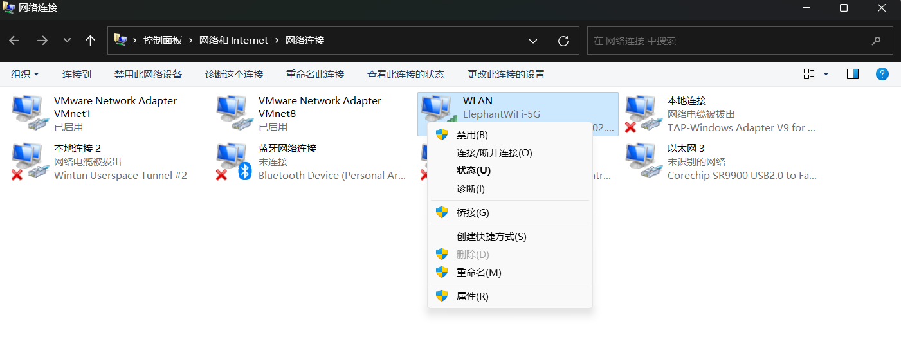
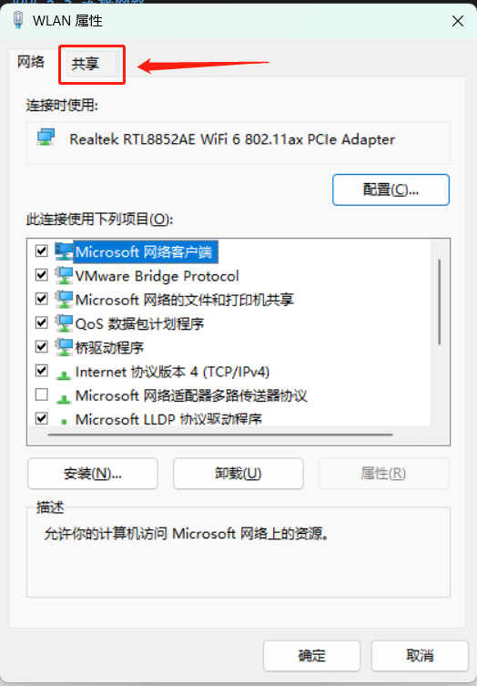
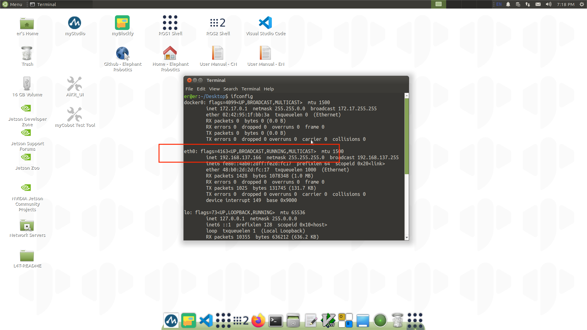
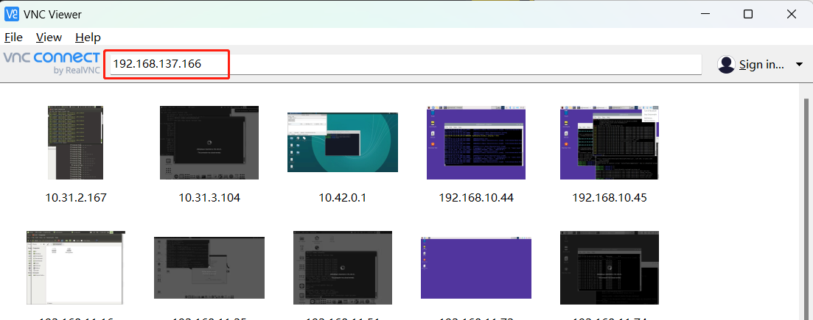
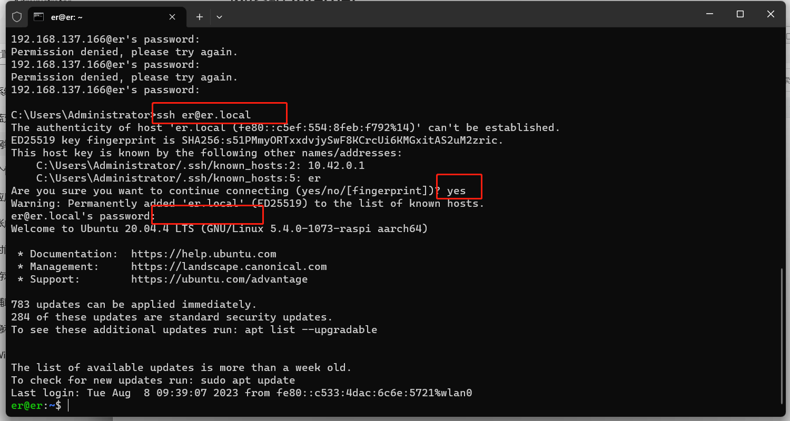

System basic function description
1. Robot system introduction
System introduction
Ubuntu is the most widely used Linux operating system in personal desktop operating systems. For beginners, it is a good choice to be familiar with the Linux environment or some embedded hardware operating systems. The Ubuntu official website also released a dedicated operating system for Raspberry Pi.

System Function Introduction
myStudio: Firmware burning software, used to update and burn new versions of firmware
myBlockly: Graphical programming software, you can directly drag and drop blocks to form running codes and control the robot arm
ROS1 Shell: Directly enter the compiled ROS1 environment, you can directly enter the corresponding instructions, and run the corresponding ROS1 code
ROS2 Shell: Directly enter the compiled ROS2 environment, you can directly enter the corresponding instructions, and run the corresponding ROS2 code
Github-ElephantRobotics: Elephant Robotics official open source code repository
Home-ElephantRobotics: Elephant Robotics official website homepage
UserManual - CN/EN: Machine manual, including all content about robot arm control
WiFi_ON/OFF: WiFi switch, click to turn on/off WiFi function
HotSpot_ON/OFF: Hotspot switch, click to turn on/off hotspot function, the hotspot name after turning on is ElephantRobotics_AP_XXXX
Language Support: System language setting, click to enter the system language setting interface
2. System password description
Power-on account password & VNC connection password & SSH connection password & administrator account password
Unified as: Elephant
How to define a new password
Change account password
Use shortcut keys
ctrl + alt + Tto open the terminalEnter
passwdto modify the account passwordEnter the new password twice
Change VNC connection password
Use shortcut keys
ctrl + alt + Tto open the terminalEnter
vncpasswdto modify the account passwordEnter the new password twice
Change SSH connection password
The administrator account password is entered for SSH remote connection, no need to modify it separately
Change the administrator account password
Use shortcut keys
ctrl + alt + Tto open the terminalEnter
sudo passwdto modify the account passwordEnter the new password twice
3. Connect to the network
Jetson nano version robot arm only supports wired network connection, the following describes the connection method of PC sharing the network through the network cable:
- You need to prepare an Internet cable and a USB docking station with an Internet port

- Connect one end of the network cable to the network port of the robot arm, and the other end to the network card of the expansion dock, and connect the USB port of the expansion dock to the PC.
- When connecting to the PC for the first time, it will appear in the form of a driver, and a new driver needs to be installed to recognize the Ethernet of the robot arm. The following prompt will appear in the lower right corner of the desktop:

Clicking this prompt will open the following interface, click Run:

After the operation is completed, the PC can recognize the Ethernet of the robot arm.
- Search for "Control Panel" on the PC search bar and open the Control Panel!

- Select "View Network Status and Tasks"

Then click "Change Adapter Settings"
 Select the network connected to the PC, right-click and click
Select the network connected to the PC, right-click and click Properties

Then select Share, check Allow other network users to connect through this computer's Internet connection, and select the robot's Ethernet (some computers do not have this option, so just uncheck it), and click OK to exit.


- After completing the above steps, the robotic arm system uses the shortcut keys
ctrl+alt+tto open the terminal, enterifconfigand press Enter, and the appearance ofeth0indicates that the network is successful:
- After completing the above steps, the robotic arm system uses the shortcut keys

4.VNC
VNC Function Introduction
It is a remote control software, generally used to remotely solve computer failures or software debugging.The premise of using VNC is that the robot arm has been connected to the network, and the PC needs to install VNC viewer software\
VNC port description
The robot arm and PC are connected to the same WiFi or the network is shared to the robot arm through a network cable. The IP address of the robot arm is the port
Connect VNC After connecting to the network through the network cable, use the shortcut keys
ctrl+alt+tto open the terminal, enterifconfigand press Enter to obtain the network IP address of the robot: Open the VNC viewer software on the PC, enter the IP address of the robot, and press Enter. 

How to improve fluency
The fluency of remote connection depends on the fluency of the connected WiFi. It is recommended to connect to a stable WiFi for remote control
5.SSH
SSH function introduction
Simply put, SSH is a network protocol used for encrypted login between computers. If a user logs in to another remote computer from a local computer using the SSH protocol, we can assume that this login is safe, and even if it is intercepted in the middle, the password will not be leaked.
SSH port description
Default port is 22, no need to change
SSH first connection
Follow 2.3 VNC to confirm the IP address of the robot
Press
win + Ron the personal computer to open the run interface, and entercmdin the input box
- After entering, click OK to open the shell interface

- Enter
ssh er@IP addressand press Enter (the IP address is mainly displayed on the robot arm, and the figure is only an example) - The following prompt appears, enter
yesand press Enter  Enter the password
Elephant, the password will not be displayed, just enter it normally. As shown in the figure above, the remote ssh connection has been successfully completed. As shown in the figure above, the remote SSH connection to the robot arm has been successfully completedHow to improve fluency
The fluency of remote connection depends on the fluency of the connected WiFi. It is recommended to connect to a stable WiFi for remote control
6. Language configuration
- How to switch languages
Click Language Support on the desktop to enter the language switching interface, drag the language you want to change to the top, and restart the system

- How to download languages
Click Language Support on the desktop to enter the language switching interface, select the language, click Download, and enter the password Elephant

7. System resolution switch
- Click the icon in the upper right corner of the screen, select System Settings, and enter the system control panel


- Select Display and enter the resolution selection page

- Switch to select the resolution, click Apply to view the display effect, if it meets the requirements, click Keep this Configuration


8.python
- Introduction to Python for Robot System
Python3.8 is installed in the system, no need to install it yourself
Already in accordance with Python dependencies:
| Package | Version |
|---|---|
| pymycobot | 3.1.6 |
| pyserial | 3.5 |
| numpy | 1.23.5 |
| opencv-contrib-python | 4.7.0.72 |
| rospkg | 1.4.0 |
| rospkg-modules | 1.4.0 |
- First time using python
You can try this code in the input box:
print ("Hello World!")
- Run the robot case code
For specific case codes, please refer to the Python chapter. Simply copy the code in the case and use it